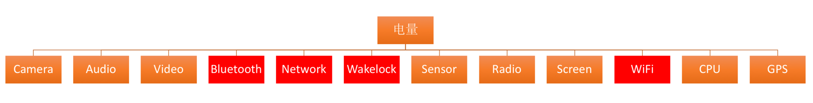
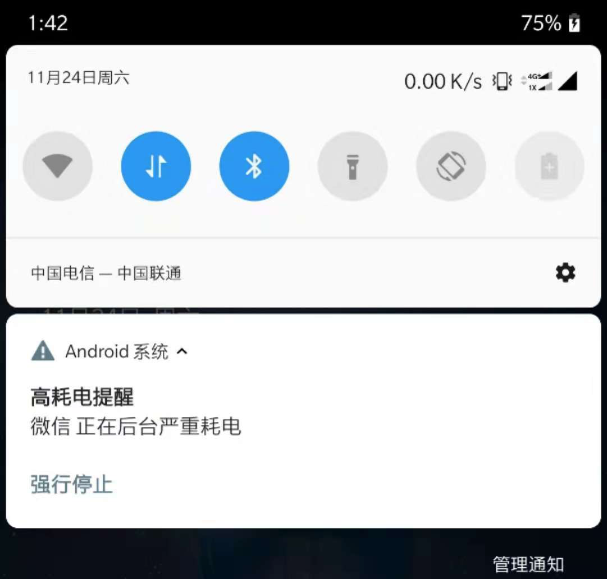
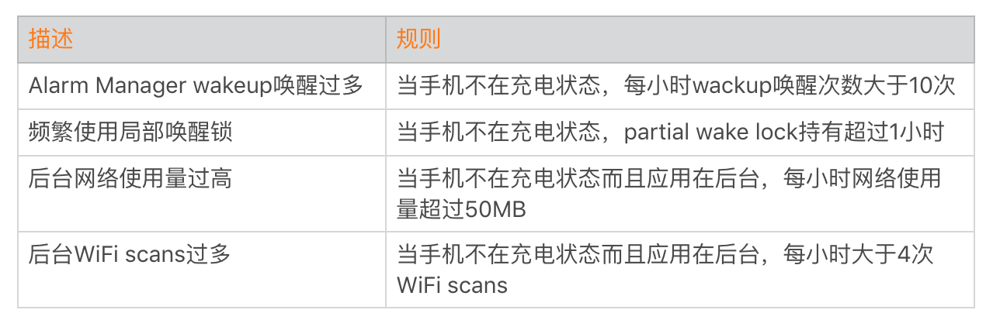
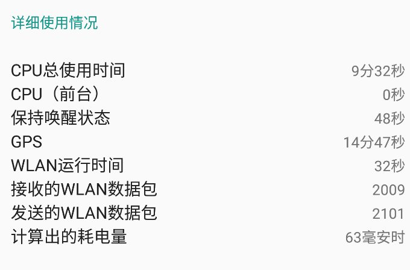
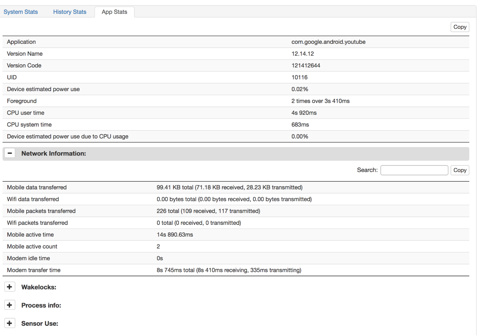
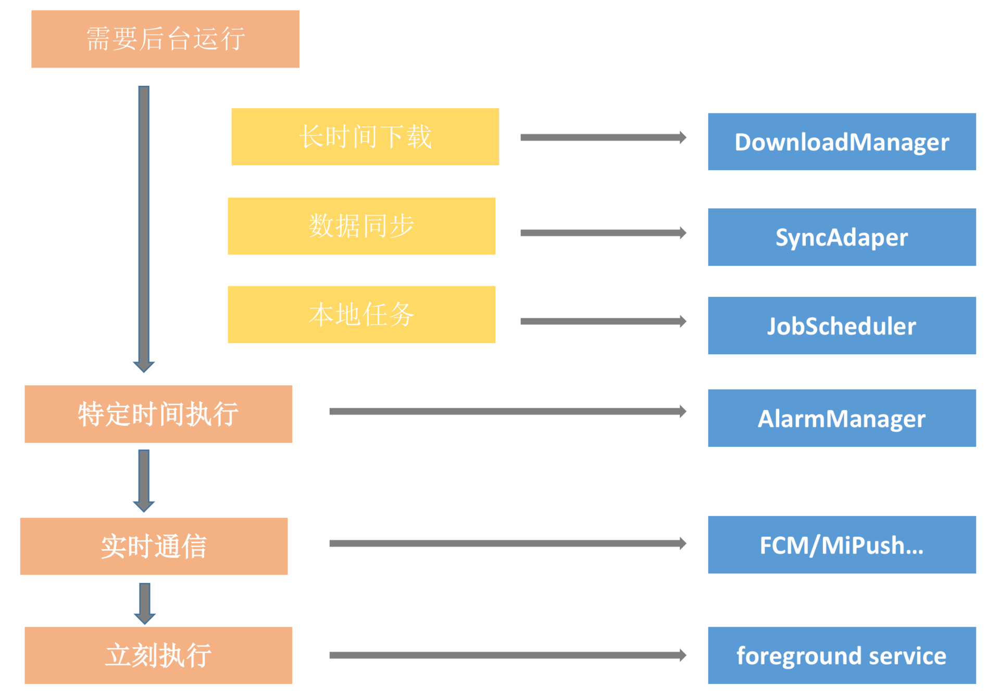
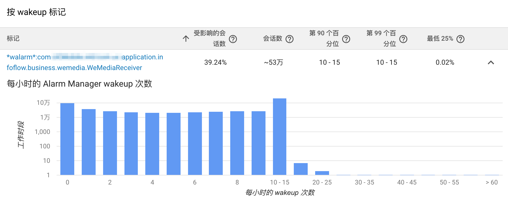
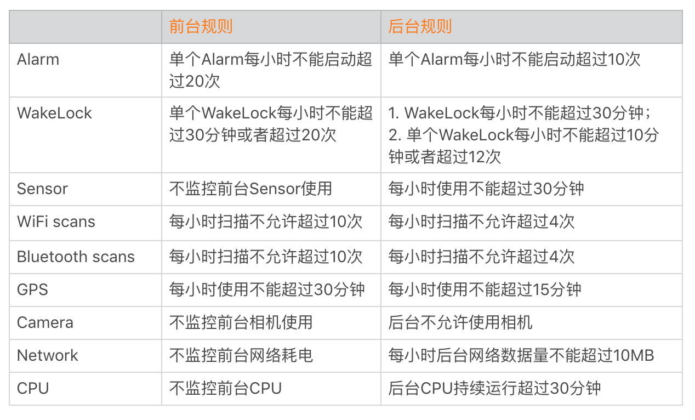
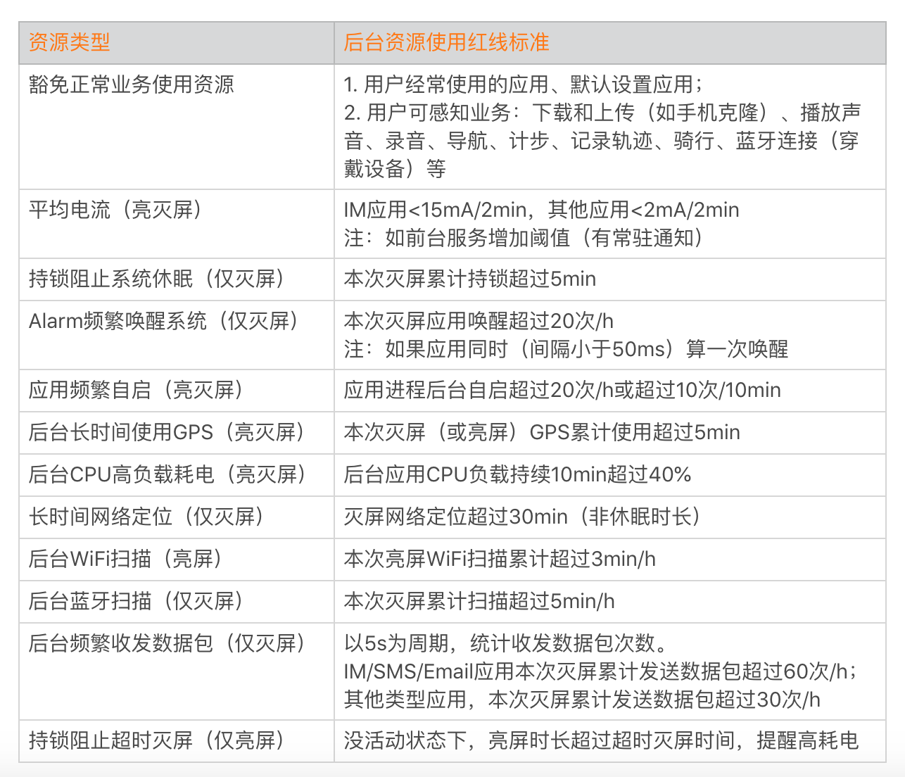

- 00 导读 如何打造高质量的应用？.md
- 00 开篇词 焦虑的移动开发者该如何破局？.md
- 01 崩溃优化（上）：关于“崩溃”那些事儿.md
- 02 崩溃优化（下）：应用崩溃了，你应该如何去分析？.md
- 03 内存优化（上）：4GB内存时代，再谈内存优化.md
- 04 内存优化（下）：内存优化这件事，应该从哪里着手？.md
- 05 卡顿优化（上）：你要掌握的卡顿分析方法.md
- 06 卡顿优化（下）：如何监控应用卡顿？.md
- 06补充篇 卡顿优化：卡顿现场与卡顿分析.md
- 07 启动优化（上）：从启动过程看启动速度优化.md
- 08 启动优化（下）：优化启动速度的进阶方法.md
- 09 I_O优化（上）：开发工程师必备的I_O优化知识.md
- 10 I_O优化（中）：不同I_O方式的使用场景是什么？.md
- 11 I_O优化（下）：如何监控线上I_O操作？.md
- 12 存储优化（上）：常见的数据存储方法有哪些？.md
- 13 存储优化（中）：如何优化数据存储？.md
- 14 存储优化（下）：数据库SQLite的使用和优化.md
- 15 网络优化（上）：移动开发工程师必备的网络优化知识.md
- 16 网络优化（中）：复杂多变的移动网络该如何优化？.md
- 17 网络优化（下）：大数据下网络该如何监控？.md
- 18 耗电优化（上）：从电量优化的演进看耗电分析.md
- 19 耗电优化（下）：耗电的优化方法与线上监控.md
- 20 UI 优化（上）：UI 渲染的几个关键概念.md
- 21 UI 优化（下）：如何优化 UI 渲染？.md
- 22 包体积优化（上）：如何减少安装包大小？.md
- 23 包体积优化（下）：资源优化的进阶实践.md
- 24 想成为Android高手，你需要先搞定这三个问题.md
- 25 如何提升组织与个人的研发效能？.md
- 26 关于编译，你需要了解什么？.md
- 27 编译插桩的三种方法：AspectJ、ASM、ReDex.md
- 28 大数据与AI，如何高效地测试？.md
- 29 从每月到每天，如何给版本发布提速？.md
- 30 数据评估（上）：如何实现高可用的上报组件？.md
- 31 数据评估（下）：什么是大数据平台？.md
- 32 线上疑难问题该如何排查和跟踪？.md
- 33 做一名有高度的移动开发工程师.md
- 34 聊聊重构：优秀的架构都是演进而来的.md
- 35 Native Hook 技术，天使还是魔鬼？.md
- 36 跨平台开发的现状与应用.md
- 37 移动开发新大陆：工作三年半，移动开发转型手游开发.md
- 38 移动开发新大陆：Android音视频开发.md
- 39 移动开发新大陆： 边缘智能计算的趋势.md
- 40 动态化实践，如何选择适合自己的方案？.md
- 41 聊聊Flutter，面对层出不穷的新技术该如何跟进？.md
- 42 Android开发高手课学习心得.md
- Android JVM TI机制详解（内含福利彩蛋）.md
- Android工程师的“面试指南”.md
- Native下如何获取调用栈？.md
- 专栏学得苦？可能你还需要一份配套学习书单.md
- 专栏学得苦？可能是方法没找对.md
- 程序员修炼之路 设计能力的提升途径.md
- 练习Sample跑起来 ASM插桩强化练习.md
- 练习Sample跑起来 唯鹿同学的练习手记 第1辑.md
- 练习Sample跑起来 唯鹿同学的练习手记 第2辑.md
- 练习Sample跑起来 唯鹿同学的练习手记 第3辑.md
- 练习Sample跑起来 热点问题答疑第1期.md
- 练习Sample跑起来 热点问题答疑第2期.md
- 练习Sample跑起来 热点问题答疑第3期.md
- 练习Sample跑起来 热点问题答疑第4期.md
- 结束语 移动开发的今天和明天.md
- 聊聊Framework的学习方法.md
19 耗电优化（下）：耗电的优化方法与线上监控
相比启动、卡顿、内存和网络的优化来说，可能大多数应用对耗电优化的关注不是太多。当然并不是我们不想做耗电优化，更多时候是感觉有些无从下手。
不同于启动时间、卡顿率，耗电在线上一直缺乏一个可以量化的指标。Android系统通过计算获得的应用耗电数据只是一个估算值，从Android 4.4开始，连这个估算值也无法拿到了。当有用户投诉我们应用耗电的时候，我们一般也无所适从，不知道该如何定位、如何分析。
耗电优化究竟需要做哪些工作？我们如何快速定位代码中的不合理调用，并且持续监控应用的耗电情况呢？今天我们就一起来学习耗电的优化方法和线上监控方案。
耗电优化
在开始讲如何做耗电优化之前，你需要先明确什么是耗电优化，做这件事情的目的究竟是什么。
1. 什么是耗电优化
有些同学可能会疑惑，所谓的耗电优化不就是减少应用的耗电，增加用户的续航时间吗？但是落到实践中，如果我们的应用需要播放视频、需要获取GPS信息、需要拍照，这些耗电看起来是无法避免的。
如何判断哪些耗电是可以避免，或者是需要去优化的呢？你可以看下面这张图，当用户去看耗电排行榜的时候，发现“王者荣耀”使用了7个多小时，这时用户对“王者荣耀”的耗电是有预期的。
假设这个时候发现某个应用他根本没怎么使用（前台时间很少），但是耗电却非常多。这种情况会跟用户的预期差别很大，他可能就会想去投诉。
所以耗电优化的第一个方向是优化应用的后台耗电。知道了系统是如何计算耗电的，那反过来看，我们也就可以知道应用在后台不应该做什么，例如长时间获取WakeLock、WiFi和蓝牙的扫描等。为什么说耗电优化第一个方向就是优化应用后台耗电，因为大部分厂商预装项目要求最严格的正是应用后台待机耗电。

当然前台耗电我们不会完全不管，但是标准会放松很多。你再来看看下面这张图，如果系统对你的应用弹出这个对话框，可能对于微信来说，用户还可以忍受，但是对其他大多数的应用来说，可能很多用户就直接把你加入到后台限制的名单中了。

耗电优化的第二个方向是符合系统的规则，让系统认为你耗电是正常的。而Android P是通过Android Vitals监控后台耗电，所以我们需要符合Android Vitals的规则，目前它的具体规则如下：

虽然上面的标准可能随时会改变，但是可以看到，Android系统目前比较关心后台Alarm唤醒、后台网络、后台WiFi扫描以及部分长时间WakeLock阻止系统后台休眠。
2. 耗电优化的难点
既然已经明确了耗电优化的目的和方向，那我们就开始动手吧。但我想说的是，只有当你跳进去的时候，才能发现耗电优化这个坑有多深。它主要有下面几个问题：
- 缺乏现场，无法复现。用户上传某个截图，你的应用耗电占比30%。通过电量的详细使用情况，我们可能会有一些猜测。但是用户也无法给出更丰富的信息，以及具体是在什么场景发生的，可以说是毫无头绪。

- 信息不全，难以定位。如果是开发人员或者厂商可以提供bug report，利用Battery Historian可以得到非常全的耗电统计信息。但是Battery Historian缺失了最重要的堆栈信息，代码调用那么复杂，可能还有很多的第三方SDK，我们根本不知道是哪一行代码申请了WakeLock、使用了Sensor、调用了网络等。

- 无法评估结果。通过猜测，我们可能会尝试一些解决方案。但是从Android 4.4开始，我们无法拿到应用的耗电信息。尽管我们解决了某个耗电问题，也很难去评估它是否已经生效，以及对用户产生的价值有多大。
3. 耗电优化的方法
无法复现、难以定位，也无法评估结果，耗电优化之路实在是不容易。在真正去做优化之前，先来看看我们的应用为什么需要在后台耗电？
大部分的开发者不是为了“报复社会”，故意去浪费用户的电量，主要可能有以下一些原因：
某个需求场景。最普遍的场景就是推送，为了实现推送我们只能做各种各样的保活。在需求面前，用户的价值可能被排到第二位。
代码的Bug。因为某些逻辑考虑不周，可能导致GPS没有关闭、WakeLock没有释放。
所以相反地，耗电优化的思路也非常简单。
- 找到需求场景的替代方案。以推送为例，我们是否可以更多地利用厂商通道，或者定时的拉取最新消息这种模式。如果真是迫不得已，是不是可以使用foreground service或者引导用户加入白名单。后台任务的总体指导思想是减少、延迟和合并，可以参考微信一个小伙写的《Android后台调度任务与省电》。在后台运行某个任务之前，我们都需要经过下面的思考：

- 符合Android规则。首先系统的大部分耗电监控，都是在手机在没有充电的时候。我们可以选择在用户充电时才去做一些耗电的工作，具体方法可查看官方文档《监控电池电量和充电状态》。其次是尽早适配最新的Target API，因为高版本系统后台限制本来就非常严格，应用在后台耗电本身就变得比较困难了。
IntentFilter ifilter = new IntentFilter(Intent.ACTION_BATTERY_CHANGED);
Intent batteryStatus = context.registerReceiver(null, ifilter);
//获取用户是否在充电的状态或者已经充满电了
int status = batteryStatus.getIntExtra(BatteryManager.EXTRA_STATUS, -1);
boolean isCharging = status == BatteryManager.BATTERY_STATUS_CHARGING || status == BatteryManager.BATTERY_STATUS_FULL;
- 异常情况监控。即使是最严格的Android P，系统也会允许应用部分地使用后台网络、Alarm以及JobSheduler事件（不同的分组，限制次数不同）。因此出现异常情况的可能性还是存在的，更不用说低版本的系统。对于异常的情况，我们需要类似Android Vitals电量监控一样，将规则抽象出来，并且增加上更多辅助我们定位问题的信息。
耗电监控
在I/O监控中，我指定了重复I/O、主线程I/O、Buffer过大以及I/O泄漏这四个规则。对于耗电监控也是如此，我们首先需要抽象出具体的规则，然后收集尽量多的辅助信息，帮助问题的排查。
1. Android Vitals
前面已经说过Android Vitals的几个关于电量的监控方案与规则，我们先复习一下。
在使用了一段时间之后，我发现它并不是那么好用。以Alarm wakeup为例，Vitals以每小时超过10次作为规则。由于这个规则无法做修改，很多时候我们可能希望针对不同的系统版本做更加细致的区分。
其次跟Battery Historian一样，我们只能拿到wakeup的标记的组件，拿不到申请的堆栈，也拿不到当时手机是否在充电、剩余电量等信息。

对于网络、WiFi scans以及WakeLock也是如此。虽然Vitals帮助我们缩小了排查的范围，但是依然需要在茫茫的代码中寻找对应的可疑代码。
2. 耗电监控都监控什么
Android Vitals并不是那么好用，而且对于国内的应用来说其实也根本无法使用。不管怎样，我们还是需要搭建自己的耗电监控系统。
那我们的耗电监控系统应该监控哪些内容，怎么样才能比Android Vitals做得更好呢？
监控信息。简单来说系统关心什么，我们就监控什么，而且应该以后台耗电监控为主。类似Alarm wakeup、WakeLock、WiFi scans、Network都是必须的，其他的可以根据应用的实际情况。如果是地图应用，后台获取GPS是被允许的；如果是计步器应用，后台获取Sensor也没有太大问题。
现场信息。监控系统希望可以获得完整的堆栈信息，比如哪一行代码发起了WiFi scans、哪一行代码申请了WakeLock等。还有当时手机是否在充电、手机的电量水平、应用前台和后台时间、CPU状态等一些信息也可以帮助我们排查某些问题。
提炼规则。最后我们需要将监控的内容抽象成规则，当然不同应用监控的事项或者参数都不太一样。
由于每个应用的具体情况都不太一样，下面是一些可以用来参考的简单规则。

在安卓绿色联盟的会议中，华为公开过他们后台资源使用的“红线”，你也可以参考里面的一些规则：

2. 如何监控耗电
明确了我们需要监控什么以及具体的规则之后，终于可以来到实现这个环节了。跟I/O监控、网络监控一样，我首先想到的还是Hook方案。
Java Hook
Hook方案的好处在于使用者接入非常简单，不需要去修改自己的代码。下面我以几个比较常用的规则为例，看看如果使用Java Hook达到监控的目的。
- WakeLock。WakeLock用来阻止CPU、屏幕甚至是键盘的休眠。类似Alarm、JobService也会申请WakeLock来完成后台CPU操作。WakeLock的核心控制代码都在PowerManagerService中，实现的方法非常简单。
// 代理PowerManagerService
ProxyHook().proxyHook(context.getSystemService(Context.POWER_SERVICE), "mService", this)；
@Override
public void beforeInvoke(Method method, Object[] args) {
// 申请Wakelock
if (method.getName().equals("acquireWakeLock")) {
if (isAppBackground()) {
// 应用后台逻辑，获取应用堆栈等等
} else {
// 应用前台逻辑，获取应用堆栈等等
}
// 释放Wakelock
} else if (method.getName().equals("releaseWakeLock")) {
// 释放的逻辑
}
}
- Alarm。Alarm用来做一些定时的重复任务，它一共有四个类型，其中ELAPSED_REALTIME_WAKEUP和RTC_WAKEUP类型都会唤醒设备。同样，Alarm的核心控制逻辑都在AlarmManagerService中，实现如下：
// 代理AlarmManagerService
new ProxyHook().proxyHook(context.getSystemService
(Context.ALARM_SERVICE), "mService", this)；
public void beforeInvoke(Method method, Object[] args) {
// 设置Alarm
if (method.getName().equals("set")) {
// 不同版本参数类型的适配，获取应用堆栈等等
// 清除Alarm
} else if (method.getName().equals("remove")) {
// 清除的逻辑
}
}
- 其他。对于后台CPU，我们可以使用卡顿监控学到的方法。对于后台网络，同样我们可以通过网络监控学到的方法。对于GPS监控，我们可以通过Hook代理LOCATION_SERVICE。对于Sensor，我们通过Hook SENSOR_SERVICE中的“mSensorListeners”，可以拿到部分信息。
通过Hook，我们可以在申请资源的时候将堆栈信息保存起来。当我们触发某个规则上报问题的时候，可以将收集到的堆栈信息、电池是否充电、CPU信息、应用前后台时间等辅助信息也一起带上。
插桩
虽然使用Hook非常简单，但是某些规则可能不太容易找到合适的Hook点。而且在Android P之后，很多的Hook点都不支持了。
出于兼容性考虑，我首先想到的是写一个基础类，然后在统一的调用接口中增加监控逻辑。以WakeLock为例：
public class WakelockMetrics {
// Wakelock 申请
public void acquire(PowerManager.WakeLock wakelock) {
wakeLock.acquire();
// 在这里增加Wakelock 申请监控逻辑
}
// Wakelock 释放
public void release(PowerManager.WakeLock wakelock, int flags) {
wakelock.release();
// 在这里增加Wakelock 释放监控逻辑
}
}
Facebook也有一个耗电监控的开源库Battery-Metrics，它监控的数据非常全，包括Alarm、WakeLock、Camera、CPU、Network等，而且也有收集电量充电状态、电量水平等信息。
Battery-Metrics只是提供了一系列的基础类，在实际使用中，接入者可能需要修改大量的源码。但对于一些第三方SDK或者后续增加的代码，我们可能就不太能保证可以监控到了。这些场景也就无法监控了，所以Facebook内部是使用插桩来动态替换。
遗憾的是，Facebook并没有开源它们内部的插桩具体实现方案。不过这实现起来其实并不困难，事实上在我们前面的Sample中，已经使用过ASM、Aspectj这两种插桩方案了。后面我也安排单独一期内容来讲不同插桩方案的实现。
插桩方案使用起来兼容性非常好，并且使用者也没有太大的接入成本。但是它并不是完美无缺的，对于系统的代码插桩方案是无法替换的，例如JobService申请PARTIAL_WAKE_LOCK的场景。
总结
从Android系统计算耗电的方法，我们知道了需要关注哪些模块的耗电。从Android耗电优化的演进历程，我们知道了Android在耗电优化的一些方向以及在意的点。从Android Vitals的耗电监控，我们知道了耗电优化的监控方式。
但是系统的方法不一定可以完全适合我们的应用，还是需要通过进一步阅读源码、思考，沉淀出一套我们自己的优化实践方案。这也是我的性能优化方法论，在其他的领域也是如此。
课后作业
在你的项目中，做过哪些耗电优化和监控的工作吗？你的实现方案是怎样的？欢迎留言跟我和其他同学一起讨论。
今天的课后练习是，按照文中的思路，使用Java Hook实现Alarm、WakeLock和GPS的耗电监控。具体的规则跟文中表格一致，请将完善后的代码通过Pull requests提交到Chapter19中。
欢迎你点击“请朋友读”，把今天的内容分享给好友，邀请他一起学习。最后别忘了在评论区提交今天的作业，我也为认真完成作业的同学准备了丰厚的“学习加油礼包”，期待与你一起切磋进步哦。
© 2019 - 2023 Liangliang Lee. Powered by gin and hexo-theme-book.